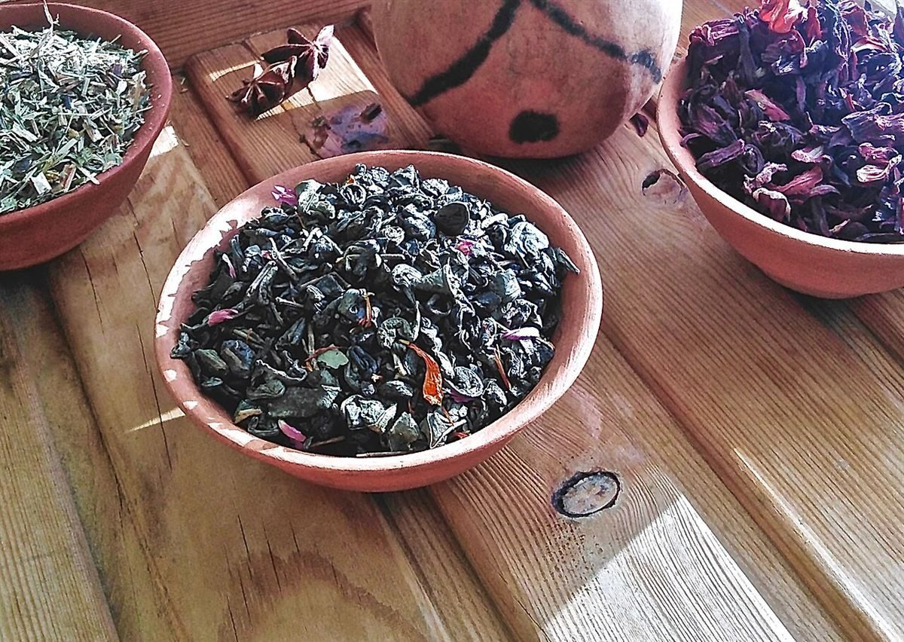
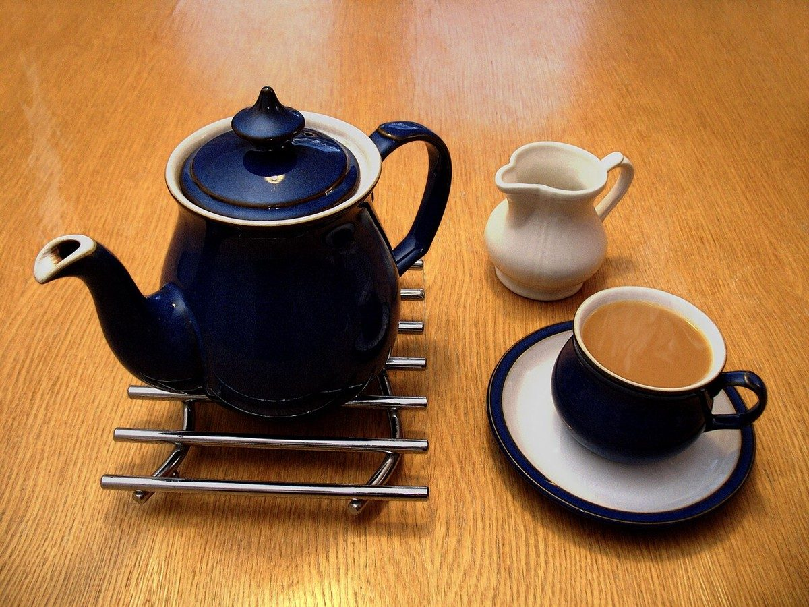

七つの小皿
まだ空いている小皿が、五つ。
いま確認できているお店の情報を、スパイス缶の七つの小皿に見立てて並べました。「確認済み」は所在地とInstagramだけ。ほかは準備中の空き皿です。皿の中の写真はフリー素材のイメージで、お店のものではありません。
 一所在地確認済み
一所在地確認済み 二Instagram確認済み
二Instagram確認済み- 三営業時間準備中

四定休日準備中
五メニュー準備中 六ご予約準備中
六ご予約準備中 七駐車場準備中
七駐車場準備中
制作側の連想
チャイの鍋とスパイス缶から
このページの見立ては、制作側がお店の業種(チャイを扱うカフェ)から連想したものです。チャイは鍋で煮出してつくる飲み物として知られ、インドの台所には、丸い缶に小皿が並んだスパイス入れがあると聞きます。そこで、お店の情報を七つの小皿に分けて並べるデザインにしました。お店の理念・由来・メニューとは無関係の、制作側の連想です。
屋号「日月」の由来は分かりません。

ご案内
お店のこと(確認できたものだけ)
| 所在地 | 〒527-0012 滋賀県東近江市八日市本町7-6 |
|---|---|
| 電話 | なし |
| 営業時間 | 準備中 |
| 定休日 | 準備中 |
| ご予約 | 準備中 |
| 駐車場 | 準備中 |
| SNS | Instagram @chai_hizuki |